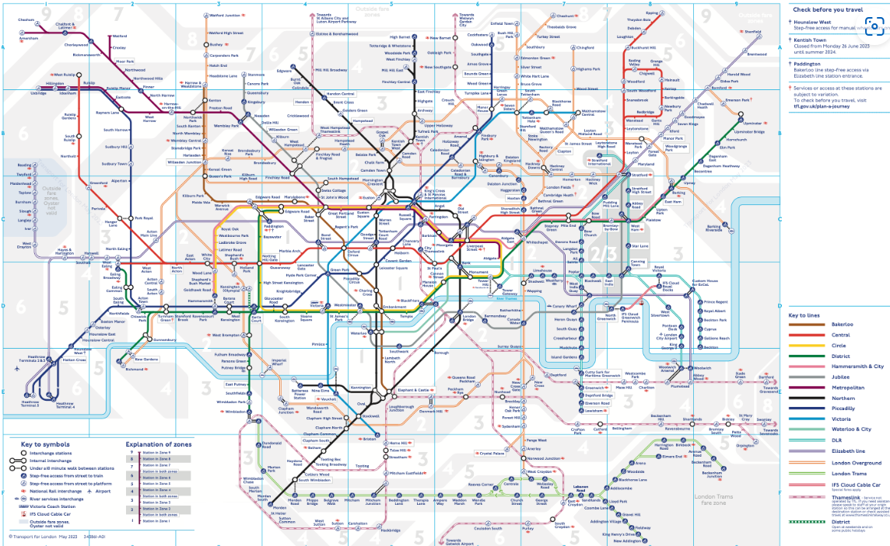

Welcome to the future of London Tube navigation! This showcases the abstract section from the final project report, a graduate-level endeavor in Rule-based Artificial Intelligence. Dive into the full report here, and explore the GitHub repository housing the code here.
The London Tube is an urban lifeline, and navigating it seamlessly is now possible with our CLIPS-Powered Tube Navigation Expert System. Discover how this innovative solution redefines Tube travel, offering real-time insights and user-friendly interactions.
Our project has achieved significant success in refining the system to better serve the needs of travelers. More importantly, we've addressed a crucial aspect of Tube navigation—station closures. Our expert system intelligently adapts to closures, providing alternative routes on-the-fly and ensuring users can confidently navigate the ever-changing landscape of London's underground network. At the heart of our system is an enhanced option-based interface, aiming to make user interaction as intuitive as the journey itself. We believe that accessing information and planning routes should be a seamless experience. The improved interface ensures that users can effortlessly engage with the expert system, allowing them to plan their journeys with simplicity and convenience. No more deciphering complex instructions—our system puts the power of Tube navigation directly into the hands of the traveler.
The success of our London Tube Navigation Expert System lies in the careful orchestration of templates, rules, and functions. These elements work in tandem to decipher user queries, process information, and deliver precise navigation guidance. Behind the scenes, our system is a sophisticated engine that transforms data into actionable insights, ensuring a reliable and efficient user experience. In the dynamic landscape of London's underground network, our CLIPS-powered Tube Navigation System is not just a project; it's a solution to the challenges faced by travelers every day. By leveraging the capabilities of artificial intelligence, our system is poised to revolutionize the way people explore and navigate the iconic Tube system.